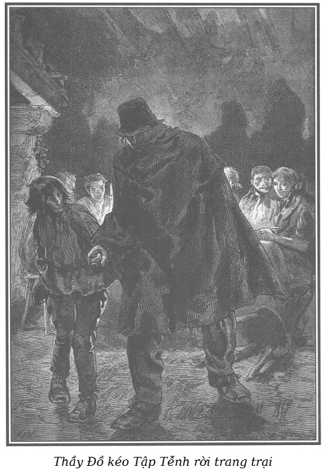
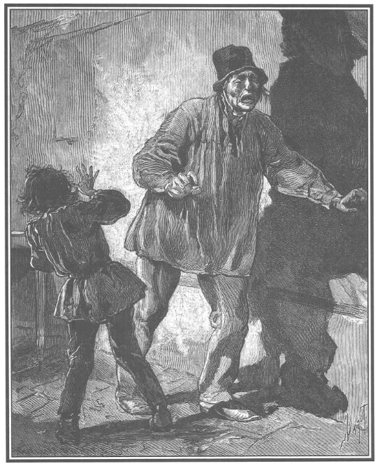
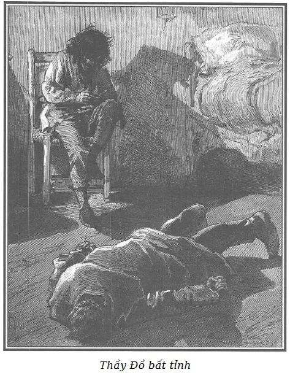

Rodolphe!!! Bà Georges!!!
Lão Thầy Đồ không thể cho là bị nhầm lẫn bởi sự giống nhau tình cờ về tên gọi như thế; trước khi xử phạt lão bằng một hình phạt khủng khiếp, Rodolphe đã nói với lão là ông đem lại cho bà Georges niềm hứng thú lớn. Sau nữa, sự có mặt mới đây của ông David da đen trong trang trại này chứng tỏ cho lão Thầy Đồ thấy là lão không nhầm.
Lão nhận ra một cái gì đó thuộc về định mệnh, không thể tránh được trong lần trùng hợp cuối cùng làm đảo lộn những hy vọng đã có lúc lão mơ tưởng về lòng độ lượng của ông chủ trang trại.

.Hành động đầu tiên của lão là chuồn khỏi trang trại ngay. Rodolphe gợi cho lão một nỗi sợ khủng khiếp, có thể lúc này ông ta đang ở đây… Vừa nguôi được nỗi sững sờ, lão đứng dậy, nắm lấy tay thằng Tập Tễnh kêu lên, nhớn nhác:
- Ta đi thôi… dẫn tao… chúng ta ra khỏi đây thôi!
Những người nông dân ngạc nhiên nhìn nhau.
- Ông ra đi… lúc này à? Khoan nghĩ đến chuyện đó, ông già tội nghiệp của tôi. - Bố Châtelain nói. - Sao lại có chuyện thay đổi đột ngột này? Vì sao nổi nóng vô cớ thế, ông điên rồi sao?
Thằng Tập Tễnh chớp ngay lấy thời cơ, thở dài để ngón tay trỏ lên trán như muốn nói cho những người nông dân hiểu là ông bố hờ của nó không được tỉnh táo tí nào!
Người nông dân già gật gật đầu tỏ ý đã hiểu và thông cảm.
- Lại đây, lại đây, chúng ta đi thôi! - Lão Thầy Đồ nhắc lại, vừa nói vừa tìm cách lôi thằng con theo.
Thằng Tập Tễnh nhất quyết không từ bỏ nơi êm ấm này để chạy ra ngoài đồng rét mướt.
- Lạy Chúa! Tội nghiệp cha tôi! Cha lại lên cơn rồi. Hãy bình tĩnh, nếu ra ngoài trong đêm tối và rét mướt này, cha sẽ ốm mất. Thà con chịu lỗi không vâng lời còn hơn là dẫn cha ra đi vào giờ này. - Rồi nó quay lại nói với các bác nông dân: - Có phải thế không, các quý ông tốt bụng của cháu. Nhờ các ông các bà giúp cháu giữ cha cháu lại.
- Được, được, cứ yên tâm cháu ạ… - Bố Châtelain nói. - Chúng tôi sẽ không mở cửa đâu… Cha cháu buộc phải ngủ lại đây.
- Các ông không được ép buộc tôi phải ngủ lại đây! - Thầy Đồ kêu lên. - Vả lại tôi sẽ làm phiền ông chủ của các ông… ông Rodolphe… Ông đã nói với tôi trại không phải là nhà an dưỡng, vì thế, hãy để tôi đi…
- Làm phiền ông chủ của chúng tôi ư? Hãy yên tâm, khốn nỗi là ông ấy không có ở đây, ông ấy không đến đây thường xuyên như tôi mong muốn, nhưng dù ông ấy có ở đây thì cũng không phiền gì cả… Trang trại này không phải là nhà an dưỡng, đúng thế, nhưng tôi đã nói với ông là những người tàn tật đáng thương như ông có thể ở lại một ngày và một đêm.
- Ông chủ của ông không có mặt ở đây tối nay à? - Lão Thầy Đồ hỏi, đỡ lo sợ hơn.
- Không, theo thói quen, ông ấy sẽ đến trong năm hoặc sáu ngày nữa, vì thế ông không còn lý do để lo lắng nữa. Không chắc là bà quản lý tốt bụng sẽ xuống đây lúc này, cứ yên tâm. Chẳng phải chính bà ấy đã ra lệnh dọn giường cho ông ở đây đó sao? Vả lại nếu không được gặp bà ấy tối nay thì sáng mai trước khi ra đi, ông sẽ trình bày nỗi khốn khổ của mình để bà ấy lưu ý ông chủ đến số phận của ông và giữ ông ở lại.
- Không! Không! - Tên cướp nói với vẻ sợ hãi. - Tôi đã thay đổi ý kiến… thằng con tôi nói có lý. Người bà con của tôi ở Louvres rất thương tôi… Tôi sẽ tới đó tìm họ.
- Tùy ý ông, - bố Châtelain nói với giọng ân cần vì cho rằng mình đang nói với một người đầu óc không bình thường - ông sẽ đi vào sáng mai. Còn về chuyến đi vào tối nay thì không nên nghĩ đến nữa.
Mặc dù biết Rodolphe không có mặt ở Bouqueval, lão Thầy Đồ vẫn chưa thể yên tâm được. Mặc dù đã bị biến dạng đi một cách ghê gớm, lão vẫn còn lo sợ người vợ cũ, một lúc nào đó xuống bếp, sẽ nhận ra lão, và trong trường hợp đó, lão tin chắc là vợ lão sẽ tố giác và bắt giữ lão vì lão luôn nghĩ rằng Rodolphe trừng trị lão khủng khiếp như thế cũng nhằm thỏa mãn nỗi căm hờn và sự trả thù của bà Georges.
Nhưng tên cướp không thể rời khỏi trang trại, lão phải nhắm mắt nghe theo thằng Tập Tễnh. Lão đành cam chịu vậy và để khỏi bắt gặp người vợ cũ, lão nói với ông nông dân già:
- Vì các ông cho biết là không có gì phiền đến ông chủ cũng như bà quản lý… tôi đồng ý ở lại trang trại. Nhưng vì tôi rất mệt, nên xin phép được đi ngủ, tôi muốn sáng mai đi thật sớm.
- Ồ, sáng sớm mai, tùy ý ông. Ở đây thường dậy sớm và để ông khỏi lạc đường, chúng tôi sẽ dẫn đường cho ông đi.
- Tôi, nếu ông đồng ý, tôi sẽ dẫn ông già này ra tận đầu đường - Jean-René nói - vì bà quản lý bảo tôi phải đánh xe đi lấy số tiền tại nhà ông chưởng khế ở Villiers-le-Bel.
- Anh sẽ đưa ông già này đến chỗ đường ông ấy muốn đi, nhưng anh sẽ đi bộ. - Bố Châtelain nói. - Bà ấy vừa thay đổi ý kiến; bà ấy nghĩ là không cần ứng trước và để trong trang trại một số tiền lớn như vậy, ngày thứ Hai đi Villiers-le-Bel vẫn kịp chán. Đến thời điểm ấy, tiền để ở nhà ông chưởng khế cũng ổn như ở đây.
- Bà ấy hiểu rõ hơn tôi về công việc của mình. Nhưng tiền nong để ở đây thì có gì mà sợ, bố Châtelain nhỉ?
- Nhờ trời, con ạ, ở đây chẳng có gì phải sợ. Chẳng sao! Ta thích thấy năm trăm bì lúa hơn là mười bì tiền.
- Này! - Bố Châtelain bảo tên cướp và thằng Tập Tễnh. - Lại đây, ông già trung hậu, cả cháu nữa, hãy theo tôi. - Vừa nói ông vừa cầm một cây đèn.
Sau đó, cùng hai người làm công trong trang trại, ông dẫn hai bố con họ vào một phòng nhỏ ở tầng trệt, sau khi đi qua một hành lang dài thông với nhiều cửa buồng.
Bố Châtelain đặt cây đèn lên bàn và nói với lão Thầy Đồ:
- Chỗ ngủ của ông ở đây. Cầu Chúa cho ông một đêm tốt lành, ông già tội nghiệp của tôi. Còn về phần cháu, cháu sẽ ngủ ngon, tuổi cháu phải thế.
Tên cướp ngồi xuống mép giường mà thằng Tập Tễnh dẫn đến, vẻ mặt buồn rầu nghĩ ngợi.
Thằng bé thọt ra dấu cho ông Châtelain lúc ông rời khỏi phòng và theo ông ra ngoài hành lang.
- Cháu muốn gì, hả cháu? - Bố Châtelain hỏi.
- Lạy Chúa! Cháu rất lo ông ạ, đôi lúc cha cháu bị lên cơn kinh giật ban đêm, một mình cháu không thể nào cứu chữa được. Nếu cần phải kêu cứu thì có ai nghe được tiếng cháu từ chỗ này không ạ?
- Tội nghiệp thằng bé! - Ông già động lòng bảo. - Cháu cứ yên tâm… cháu có thấy cái cửa kia không, ở cạnh cầu thang ấy?
- Vâng, cháu có thấy, ông ạ!
- Thế thì lúc nào cũng có người ngủ ở đó, cháu chỉ việc đánh thức người ấy, chìa khóa để ngay ở cửa, người đó sẽ giúp cháu cứu chữa cha cháu.
- Than ôi! Cả người ấy và cháu có lẽ cũng không đủ sức cứu chữa cho cha cháu, nếu cha cháu lên cơn. Liệu ông có thể tới đây với chúng cháu được không ạ? Cháu thấy ông thật tốt, thật tốt!
- Ta ấy à? Ta cũng như những người dân cày khác, ngủ trong một phòng ở cuối sân. Nhưng cháu cứ yên tâm. Jean-René rất khỏe, anh ta có thể túm sừng ghìm được một con bò mộng. Hơn nữa, nếu cần có người giúp thêm, anh ta sẽ báo cho bà nấu bếp, bà ta ngủ ở gác trên bên cạnh bà quản lý và cô tiểu thư… và nếu cần một người chăm sóc người ốm thì bà ta rất thạo.
- Ôi! Cảm ơn, cảm ơn ông kính mến, cầu Chúa ban phúc cho ông vì ông thật giàu lòng bác ái, đã rủ lòng thương hại người cha tội nghiệp của cháu như thế.
- Thôi được cháu ạ… Chào cháu, mong rằng cháu sẽ không phải gọi ai đến cứu cha mình. Cháu trở về phòng đi, có lẽ cha cháu đang chờ đấy!
- Cháu sẽ vào ngay. Chúc ông ngủ ngon!
- Chúa sẽ che chở cho cháu!
Và ông già đi ra.
Ông vừa quay lưng thì thằng Tập Tễnh đã làm một cử chỉ cực kỳ nhạo báng và láo xược theo thói quen của những đứa trẻ hư đốn ở Paris. Đó là lấy bàn tay trái tự vỗ vào gáy mình nhiều lần, mỗi lần lại vung bàn tay phải xòe rộng ra phía trước.
Tinh ma quỷ quái, thằng bé nguy hiểm này đã nắm được một phần những điều cần biết để thực hiện mưu đồ đen tối của mụ Vọ và lão Thầy Đồ. Nó biết rõ trong phần chính ngôi nhà nơi nó sắp đi ngủ, chỉ có bà Georges, Marie, một bà nấu bếp và một thanh niên làm công trong trang trại.
Thằng Tập Tễnh lúc trở vào phòng tránh đến gần lão Thầy Đồ. Lão nghe tiếng, hỏi nhỏ nó:
- Mày về rồi đấy hở, đồ vô lại?
- Lão thật tọc mạch, lão mù à!
- Bây giờ tao phải trị mày về tội đã làm tao đau đớn lúc ban tối, thằng nhóc khốn kiếp. - Lão tức giận đứng dậy sờ soạng tìm thằng Tập Tễnh, vừa bước vừa dựa vào tường cho khỏi ngã. - Tao sẽ bóp cổ mày, đồ rắn độc.
- Cha tội nghiệp ơi, thật là vui khi được chơi trò bịt mắt bắt dê với thằng con thân yêu, phải không? - Thằng Tập Tễnh vừa nói vừa cười chế giễu, vừa dễ dàng tránh né sự đuổi bắt của lão già mù.
Lão Thầy Đồ lúc đầu bị cơn giận dữ thiếu suy nghĩ lôi cuốn, nhưng cũng như mọi lần đành chịu không thể nào túm được thằng Tập Tễnh.
Lão đành cắn răng chịu đựng sự hành hạ trâng tráo của thằng bé cho đến lúc nào có dịp trả thù. Bị nỗi tức giận bất lực giày vò, lão gieo mình xuống giường và chửi bới, báng bổ.
- Tội nghiệp cha đáng thương… Có phải cha bị nhức răng không?… Vì sao cha cứ chửi rủa như vậy?… Và ông cha xứ, ông ta sẽ nói thế nào nếu ông ta nghe thấy?… Ông ta sẽ phạt cha phải sám hối!
- Được, được, - tên cướp nói khàn khàn và bực bội sau một lúc lâu im lặng - cứ giễu cợt tao đi, cứ tha hồ nhiếc móc sự đau khổ của tao… Sao mày hèn thế! Rõ đẹp mặt! Cứ thế đi, độ lượng thật!…
- Ôi, chuyện con tườu! Độ lượng à? Tợn thế! - Thằng Tập Tễnh phá lên cười. - Xin lỗi nhé! Chà, thế còn ông, ông chém giết bừa bãi người ta khi còn chưa mù thì sao?
- Nhưng tao đã bao giờ làm gì tệ với mày đâu mà mày cứ hành hạ tao thế?

Tập Tễnh chế giễu Thầy Đồ.
- Trước hết bởi vì lão đã nói những lời ngu ngốc đối với bà Vọ… và bởi vì tôi nghĩ rằng “ngài” đã làm ra bộ muốn ở lại đây bằng việc nịnh bợ bọn nhà quê… có thể “ngài” muốn uống sữa lừa!
- Mày đúng là đồ tồi. Nếu tao có khả năng ở trại thì quả là sét đã nổ ngay lúc này* nhưng mày đã gần như phá đám tao bằng những trò láo xược.
Ý nói: chuyện bất ngờ như sét đánh ngang tai.
- Lão, lão mà ở lại đây ấy à! Thật buồn cười! Thế sẽ lấy ai làm vật chịu đòn cho bà Vọ? Tôi chăng? Xin đủ, tôi xin đủ rồi!
- Đồ ranh con độc ác!
- Ranh con! Này, thêm một lẽ nữa nhé, nói như bà Vọ, không có gì thú hơn là làm cho lão phải tức điên cuồng, lão có thể giết tôi bằng một quả đấm… Nếu lão yếu thì có phải hay hơn không?… Lúc tối thật đáng tức cười, lúc ngồi vào bàn ăn… Chúa tôi! Thật là tuyệt vời. Quả là một hài kịch dành riêng cho tôi. Hệt như đi quanh nhà hát Gaîté… cứ mỗi cú đá ngầm tôi tặng lão, lão tức điên đầu, vành mắt trắng dã của lão đỏ tía lên, chỉ thiếu một chút màu xanh ở giữa là thành đôi mắt cờ tam tài! Hai cái phù hiệu cảnh sát chính cống đấy!
- Thôi đi! Mày thích cười đùa, mày vui… được… cái tuổi của mày, tao không giận đâu. - Lão Thầy Đồ nói giọng trìu mến và nhẹ nhàng mong làm cho thằng Tập Tễnh đặng rủ lòng thương. - Nhưng đáng lẽ ngồi đấy để mà trêu cợt tao, mày nên nhớ đến cái việc mụ Vọ yêu quý đã dặn mày, mày phải quan sát tất cả và lấy dấu tất cả các cửa, mày nghe chưa? Họ vừa nói đến một số tiền lớn mà thứ Hai này họ sẽ có… Chúng ta sẽ quay lại đây với các bạn của chúng ta, ta sẽ làm một cú ra trò… Quả thật, tao đã rất ngu xuẩn vì muốn ở lại đây. Chỉ độ tám ngày là đủ chán với đám dân quê thật thà này, có phải không nhóc con? - Tên cướp phỉnh phờ thằng Tập Tễnh.
- Lão làm tôi phát buồn đây này! Tôi lấy danh dự mà nói thế đấy! - Thằng Tập Tễnh nói giọng giễu cợt.
- Đúng, đúng! Sẽ làm một cú ra trò ở đây… Ngay cả khi không có gì để xoáy, ta sẽ trở lại đây với mụ Vọ để trả thù. - Tên cướp nói giọng sôi lên vì tức giận và căm thù. - Bởi chắc chắn là mụ Vọ đã kích được tên Rodolphe quỷ quái trừng phạt tao, làm tao mù và phó mặc tao cho mọi người… cho mụ Vọ, cho cả một thằng ranh con như mày… Thế đấy! Vì không thể trả thù chính thằng Rodolphe, tao sẽ bắt vợ tao trả oán, nó phải trả nợ cho cả lũ. Dù phải đốt cả cái nhà này và tự vùi mình trong đống tro tàn, tao cũng cam lòng… Ôi tao muốn… Tao muốn…!
- Xem chừng lão muốn tóm vợ lão ở đây hả lão già? Vợ lão chỉ cách lão mươi bước chân thôi. Thế mới ức chứ! Nếu muốn, tôi sẽ đưa lão đến cửa phòng bà ta… tôi ấy… bởi vì tôi biết bà ta ở đâu… tôi biết, tôi biết, tôi biết… - Thằng Tập Tễnh nói tiếp, vừa nói vừa hát lầm rầm theo thói quen.
- Mày biết phòng của mụ ta ở đâu hả? - Lão Thầy Đồ nói với một niềm vui ghê rợn. - Mày biết hả?
- Tôi biết. - Thằng Tập Tễnh nói. - Tôi sẽ cho lão giơ hai chân trước lên như một con chó khi người ta cho nó một miếng xương… Coi chừng đấy, lão chó Azor*!
Tên riêng thông tục để chỉ con chó (Caruri).
- Mày biết phòng của mụ ta ở đâu hả? - Tên cướp vừa hỏi lại vừa quay về phía có tiếng nói của thằng Tập Tễnh.
- Tôi biết, điều thú vị là chỉ có một anh chàng làm công trong trang trại ngủ trong phần chính ngôi nhà chúng ta đang ở, tôi biết cửa phòng anh ta, cả chìa khóa nữa và tách một cái, thế là anh ta sẽ bị nhốt. Nào, đứng dậy, lão chó Azor!
- Ai bảo mày thế? - Tên cướp vừa nói vừa bất giác đứng dậy.
- Tốt lắm, chó già ạ! Một bà già nấu bếp ngủ bên cạnh phòng vợ lão… một vòng khóa nữa là chúng ta làm chủ cả nhà này, làm chủ vợ lão, làm chủ cô gái mặc áo choàng màu xám mà chúng ta định bắt. Bây giờ thì… đưa chân lên* đi chó già. Azor lạy khéo nào!
Nguyên văn là “faites le beau” - dạy cho chó đứng trên hai chân sau, hai chân trước giơ lên.
- Mày nói dối, mày nói dối!… Làm sao mày có thể biết được tất cả những chuyện đó?
- Tôi thọt nhưng tôi không ngu đâu… Ban nãy tôi phải bịa ra chuyện ban đêm lão hay bị lên cơn và hỏi ông già nhà quê là nếu cần kêu cứu thì gọi ai. Ông ta cho tôi biết, nếu lão lên cơn thì gọi người làm công và bà nấu bếp. Ông ấy cho tôi biết họ ngủ ở đâu, người thì ở tầng dưới, người thì ở tầng trên, gần phòng vợ lão… vợ lão…
Và thằng Tập Tễnh lại tiếp tục bài hát đơn điệu của nó. Im lặng một lúc lâu, lão Thầy Đồ nói với giọng điềm đạm, chân thành và quả quyết đến sợ:
- Nghe đây! Tao chán ngấy lắm rồi. Lúc nãy… Ừ! Này! Đúng thế… tao thú thật… tao đã có một niềm hy vọng để lúc này càng thấy số phận của tao còn bi thảm hơn. Ở tù, đi đày, lên máy chém không đáng kể so với những gì tao phải chịu đựng từ sáng đến giờ… và chuyện đó tao sẽ mãi mãi cam chịu… Hãy dẫn tao lên phòng của vợ tao… có dao đây, tao sẽ giết nó… Người ta sẽ giết tao sau… cái đó tao chẳng cần… Lòng căm giận đang làm tao nghẹt thở… Tao sẽ được trả thù… điều đó làm tao nhẹ nhõm. Chịu đựng như vậy là quá nhiều rồi, quá nhiều rồi. Trước đây mọi người thấy tao đều phải run sợ. Mày, mày thấy không?… Nếu mày hiểu được tao đau khổ như thế nào… mày sẽ thương tao… Từ lúc nãy đến giờ, tao cảm thấy đầu muốn vỡ tung ra… các mạch máu rần rật như muốn vỡ ra… đầu óc tao rối bời…
- Một chứng cảm sổ mũi, phải không bố già?… Biết điều thì hãy hắt hơi đi!… Sẽ thông thôi!… - Thằng Tập Tễnh vừa nói vừa cười rộ. - Lão có muốn hít thuốc không?
Và vừa đập mạnh lên mu bàn tay trái như đập vào nắp một hộp đựng thuốc lá, nó vừa hát:
Tôi có thuốc ngon trong hộp đựng thuốc
Tôi có thuốc ngon, anh chẳng có đâu.
- Ôi, lạy Chúa! Lạy Chúa! Họ muốn làm tao phát điên. - Tên cướp kêu to, gần như điên loạn bởi ý định trả thù đẫm máu, cuồng nhiệt, không nguôi được sự bột phát kịch liệt mà lão khó xóa dịu.
Sức lực của con quái vật đó càng dồi dào bao nhiêu thì càng bất lực bấy nhiêu.
Ta hãy tưởng tượng một con sói đói, hung dữ, sợ nước, suốt ngày bị một đứa bé trêu chọc ngoài song sắt chiếc cũi. Cách có ba bước, một cái nồi có thể thỏa mãn cái đói và cơn giận dữ của nó cùng lúc.
Những lời châm chọc cuối cùng của thằng Tập Tễnh làm tên cướp mất hết bình tĩnh.
Khi thiếu nạn nhân, trong cơn cuồng nộ, lão tức muốn ứa máu ra… máu làm lão nghẹn thở.
Trong giây phút ấy, lão quyết định tự giết mình, nếu có trong tay một khẩu súng ngắn đã lắp đạn thì lão cũng không do dự. Lão lục trong túi áo, rút ra một con dao găm dài, mở ra, giơ lên để tự đâm mình… Nhưng dù cho hành động của lão nhanh đến đâu thì sự suy nghĩ, nỗi sợ hãi và bản năng sinh tồn của lão vẫn cứ đến trước.
Tên giết người vẫn chưa đủ can đảm, lão buông rơi bàn tay cầm vũ khí xuống đùi. Thằng Tập Tễnh chăm chú theo dõi mọi cử động của lão Thầy Đồ. Khi thấy màn chót vô hiệu của cái vở kịch mới chớm ấy thì nó cười khẩy:
- Ớ, bồi bàn, một cuộc đọ sức đây!… Nhổ lông vịt đi…
Sợ loạn trí trong một cơn thịnh nộ cuối cùng và cũng vô hiệu nốt, lão Thầy Đồ, nếu có thể nói như vậy được, chẳng muốn nghe thằng Tập Tễnh nhiếc móc thêm, xấc xược chế giễu lão hèn nhát, giết người được mà lại sợ, không dám tự tử. Hết hy vọng thoát khỏi sự tàn ác của thằng bé chết tiệt ấy, mà lão coi như nghiệp báo, lão ăn cướp cố gắng mưu toan lần nữa, khơi gợi lòng hám lợi của thằng con trai Cánh Tay Đỏ.
Lão nói như cầu khẩn:
- Hãy dẫn tao đến phòng vợ tao. Mày tha hồ lấy tất cả những gì mày muốn trong phòng mụ ta, xong rồi thì mày cứ việc chuồn. Cứ để tao ở lại một mình… Mày hãy kêu là có kẻ giết người nếu mày muốn. Người ta sẽ bắt tao… người ta sẽ giết tao tại chỗ càng hay! Tao chết nhưng đã trả được thù vì tao không có gan kết thúc đời tao! Mày dẫn tao đi, dẫn tao đi, chắc chắn trong phòng mụ ta có vàng và đồ trang sức… tao đã nói là mày cứ lấy tất cả… cho riêng mày thôi… mày nghe rõ không? Cho một mình mày thôi… tao chỉ xin mày dẫn tao đến cửa, gần mụ ta.
- Vâng, tôi hiểu, lão muốn tôi dẫn đến cửa phòng vợ lão… và rồi vào đến giường… và rồi tôi sẽ chỉ cho lão biết là cần đánh vào đâu, tôi sẽ hướng ngọn dao giúp lão phải không? Tóm lại, lão muốn tôi làm cán dao của lão… Con quỷ già! - Thằng Tập Tễnh nói, khinh bỉ, giận dữ và khiếp sợ, suốt cả ngày đây là lần đầu tiên bộ mặt giảo hoạt châm biếm trâng tráo của nó trở nên nghiêm nghị. - Thà giết tôi đi, lão hiểu chưa… còn hơn là bắt tôi dẫn lão đến phòng vợ lão.
- Mày từ chối hả?
Thằng con lão Cánh Tay Đỏ không trả lời. Nó tiến lại phía lão Thầy Đồ, đi chân đất để lão không nghe tiếng, lúc đó lão đang ngồi trên giường, tay vẫn nắm con dao găm to tướng. Rồi với sự khéo léo và nhanh nhẹn tuyệt vời, nó đoạt lấy thứ vũ khí đó và nhảy vọt đến cuối phòng.
- Con dao của tao! Dao của tao! - Tên cướp la lên, dang tay ra.
- Không! Vì sớm mai lão có thể xin nói chuyện với vợ lão và sẽ nhảy chồm lên đâm bà ấy… vì lão đã chán đời như lão nói và vì lão nhát gan không dám tự tử…
- Lúc này nó lại bảo vệ vợ tôi chống lại tôi! - Tên cướp kêu lên, đầu óc lão tối sầm. - Con quái vật nhỏ này đúng là đồ quỷ sứ! Tôi đang ở đâu thế này? Vì sao nó lại bảo vệ mụ ấy?
- Vì muốn cho lão nổi khùng! - Một lần nữa thằng Tập Tễnh vừa nói vừa phá lên cười. - Nếu người ta chưa thổi tắt ngọn nến của lão… tắt vĩnh viễn… lão sẽ thấy ngọn nến ở đây đã tắt được một giờ rồi…
Và thằng Tập Tễnh lại lầm rầm hát:
Ngọn nến của ta đã tắt
Ta không còn lửa nữa…*
Tập Tễnh hát bài hát dân ca Pháp về Pierrot - một hề sân khấu cổ điển như kiểu hề môi, hề gậy, chú Tễu…
Lão Thầy Đồ bật ra một tiếng rên nặng nhọc, giơ tay lên và ngã nhào xuống nền nhà, mặt úp xuống đất bất động vì choáng do sung huyết não.
- Biết tỏng rồi lão già ạ!… - Thằng Tập Tễnh nói. - Đó là lão giả vờ để cho tôi đến gần lão mà dần cho tôi một trận nên thân chứ gì! Khi lão đã chán ăn vạ dưới sàn rồi thì lão sẽ dậy thôi!

.Thằng Tập Tễnh quyết định không ngủ vì sợ lão Thầy Đồ sờ soạng chộp được. Nó ngồi yên trên chiếc ghế, mắt không rời tên cướp, tin rằng lão đang giăng bẫy mình và không hề nghĩ rằng lão đang trong cơn nguy hiểm tí nào.
Để đỡ buồn, thằng Tập Tễnh kín đáo rút trong tủ áo ra một túi nhỏ bằng lụa đỏ và chầm chậm đếm mười bảy đồng tiền vàng với cái nhìn thèm muốn và hớn hở.
Sau đây là nguồn gốc cái tài sản bất chính của thằng Tập Tễnh.
Ta còn nhớ khi phu nhân d’Harville suýt bị chồng bắt gặp trong cuộc hò hẹn tai hại với tên chỉ huy, Rodolphe vội nhét vào tay nàng một món tiền và bảo nàng lên ngay tầng năm, nhà bác Morel, vờ như đem tiền cứu trợ gia đình này. Phu nhân d’Harville, tay cầm túi tiền, leo vội lên cầu thang. Vừa lúc đó, thằng Tập Tễnh từ phòng lão lang băm đi xuống. Thấy túi tiền, nó giả vờ ngã xuống chân nàng, đụng vào nàng và giật vội cái túi. Nàng cuống cuồng khi nghe tiếng chân chồng mình dõi theo, vội vàng đi lên tầng năm không dám kêu ca gì về việc tên thọt đã táo tợn cướp tiền của mình.
Sau khi đếm đi đếm lại số tiền vàng và khi không còn nghe tiếng động gì trong trang trại nữa, nó vểnh tai, đi chân đất, lấy dấu bốn cửa ra vào hành lang và sẵn sàng trả lời là đi kêu cứu cha nếu có người hỏi. Khi quay vào, thằng Tập Tễnh thấy lão Thầy Đồ vẫn nằm dưới đất. Sau một lát lo sợ, nó lắng nghe thấy lão thở đều đặn, nó tin là lão đang giả vờ để chộp nó.
- Vẫn cái mánh khóe đó à, lão già? - Nó nói với lão.
Một sự tình cờ đã cứu lão Thầy Đồ khỏi cái chết do biến cố chảy máu não. Do bị ngã nên lão bị chảy máu mũi. Sau đó lão bị một cơn sốt hôn mê, nửa ngủ, nửa mê và lúc sau đã chìm trong một giấc mơ kỳ quái, rùng rợn…